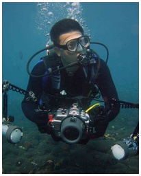

|
 |
Jeffrey LOW Kim YewGraduate Student |
Project
Sargassum on Singapore reefs
History and Research Interests
I am a "home-grown" graduate from NUS (BSc in 1988 and MSc in 1999), and worked for a number of years as a Research Assistant at NUS, initially in the Reef Ecology Laboratory and then at the Tropical Marine Science Institute. My graduate study is being supported by NParks, which I joined in 2003, where I oversee development and marine conservation issues in the islands south of Singapore.
My areas of interest revolve around the coral reefs of Singapore, including reef rehabilitation, use of artificial reefs and coral and fish community surveys. Many of these surveys also involve volunteers from the Blue Water Volunteers. I've translated some of the things I have learnt onto online media, such as a coral genera identification guide for Singapore, that uses growth form as a criteria for narrowing the search. A reef fish identification guide is also under development, and hopefully in the near future, one of marine algae.
Present
Senior Manager, National Biodiversity Centre, National Parks Board